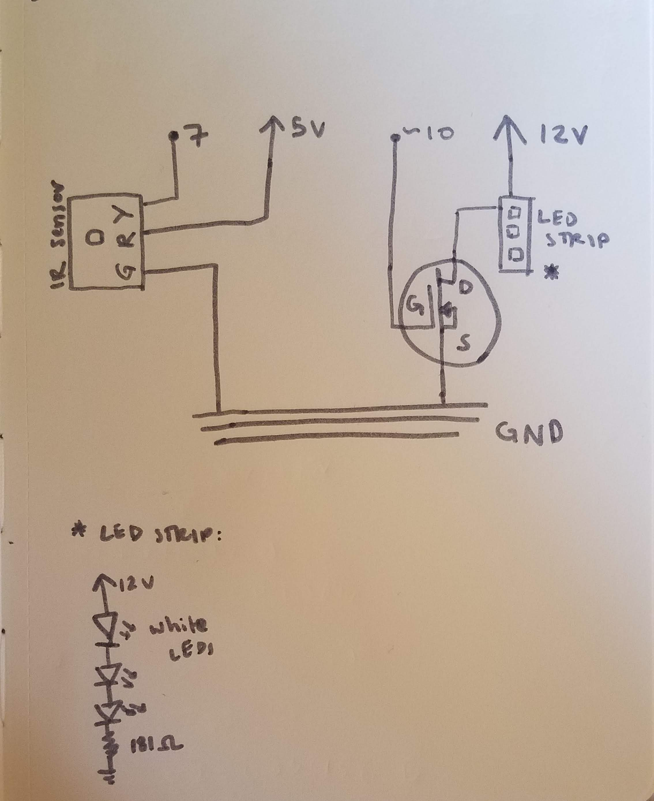

Lily's Assignment 4!
Here is all the documentation for assignment 4!
Operation of Circuit

I used a remote sensor and a transistor to be able to control an LED strip's state by pressing buttons on a remote. This project uses remote sensing and an N-MOSFET transistor. The purpose of this was to control an LED strip with a higher load than the arduino can support; to use a transistor to control load power separate from logic power.
Circuit

This image shows a zoomed-in view of my circuit. I connected the transistor to pin ~10
because I needed a pin I could analogWrite() to.

Kathy and Emily helped me figure out all the wiring during class.
Schematic

Here is my schematic. Lia helped me figure out how to draw the LED strip in my schematic. It shows that
the D pin of the transistor is attached to the LED stip, the S pin is connected to GND, and the G pin is
connected to pin ~10. The infrared sensor, used to pick up signals from the remote
so I can control the LED, gets its volatage from 5V on the arduino (R), not the 12V like the LED strip.
I connected pin 7 to Y on the sensor, which reads input that is received in HEX codes from the remote.
The voltage travels to ground (G).
Calculations for Current
 These are the calculations I did to figure out whether the current I was putting through the
transistor was an amount it could handle. The total current going through the LED
strip is 0.66A, which is far less than the transistor's max current of 32A.
These are the calculations I did to figure out whether the current I was putting through the
transistor was an amount it could handle. The total current going through the LED
strip is 0.66A, which is far less than the transistor's max current of 32A. I also figured I would find the R total for all of the LED segments. I did this by using the Resistance formula for things in parallel.
1/Rtot = (1/181)*100
I know the resistance for each 3-LED segment was 181, and so added 1/R for each of those segments. From that calculation I got Rtot= 1.81 ohms.
From there I could double-check my current calculations by doing
Vtot = Itot * Rtot
1.2V = Itot * 1.81ohms
1.2V/1.81ohms = Itot = .66A
Matching my calcution done in the photo above.
Kay, Lia, and I worked through these together to make sure we were getting the correct values.
The function of my system:
I used the remote and sensor to conrtol my LED strip. I coded my remote to match certain functions with numbers on the remote:
0: zero on the remote turned the LED strip on to max brightness (255 in the duty cycle), which is like turning the LED to HIGH using digitalWrite().
1: turns the LED off by using analogWrite() to write 0 to the transitor pin
2: Makes the LED strip incrementally brighter by using a loop
3: Makes the LED strip incrementally dimmer by using a loop
4: Uses a loop to make a blinking pattern repeat 5 times using the LED strip
Here is my code for this assignment. I based my code off an example from Circuit Basics (http://www.circuitbasics.com/arduino-ir-remote-receiver-tutorial/)
// include IR remote library so I can use my remote
#include
// set a variable equal the pin for the remote sensor
const int sensPin = 7;
// set variable equal to pin for transistor
const int transPin = 10;
// sets a key_value for what key has been pressed on the remote
unsigned long key_value = 0;
// creates an object irrecv
IRrecv irrecv(sensPin);
//creates a variable to store the results of the button press
decode_results results;
// this setup code runs once
void setup() {
// tells arduino to communicate with serial monitor
Serial.begin(9600);
// enables the remote sensor to "listen" for signals
irrecv.enableIRIn();
// transistor pin is set as output
pinmode(transPin, OUTPUT);
}
// this code will run in a repeated loop
void loop() {
// checking to see if a signal has been received from the remote sensor
if (irrecv.decode(&results)){
// if a code has been recieved, check what it is. 0XFFFFFFFF
if (results.value == 0XFFFFFFFF) {
// sets the object's value to the last key value
results.value = key_value;
}
// checks if the button 0 on the remote was pressed
if (results.value == 0xFF6897) {
// prints "0" in the serial monitor
Serial.println("0");
// turns LED strip to HIGH when 0 is pressed
analogWrite(transPin, 255);
}
// checks if the button 1 on the remote was pressed
if (results.value == 0xFF30CF) {
// prints "1" in the serial monitor
Serial.println("1");
// turns off LED strip when 1 is pressed
analogWrite(transPin, 0);
// can't press another button/turn of LED for one second
delay(1000);
}
// checks if the button 2 on the remote was pressed
if (results.value == 0xFF18E7) {
// prints "2" in the serial monitor
Serial.println("2");
// for loop that makes the LED incrementally brighter
for(int i = 0; i < 256; i++){
// turns LED on with variable brightness depending on the loop
analogWrite(transPin, i);
// delay 10 microseconds between loops
delay(10);
}
}
// checks if the button 3 on the remote was pressed
if (results.value == 0xFF7A85) {
// prints "3" in the serial monitor
Serial.println("3");
// loop that makes the LED strip incrementally dimmer
for(int i = 255; i >= 0; i--) {
// turns LED on with variable brightness depending on the loop
analogWrite(transPin, i);
// delay 25 microseconds between loops
delay(25);
}
}
// checks if the button 4 on the remote was pressed
if (results.value == 0xFF10EF) {
// prints "4" in the serial monitor
Serial.println("4");
// loops through code 5 times
for(int i = 0; i < 5; i++) {
// wait 1/10 of a second
delay(100);
// turn LED strip off
digitalWrite(transPin, LOW);
// wait 1/10 of a second
delay(100);
// turn LED strip on
digitalWrite(transPin, HIGH);
// wait 150 microseconds
delay(150);
// turn LED strip off
digitalWrite(transPin, LOW);
// wait 150 microseconds
delay(150);
// turn LED strip on
digitalWrite(transPin, HIGH);
// wait 200 microseconds
delay(200);
// turn LED strip off
digitalWrite(transPin, LOW);
// wait 200 microseconds
delay(200);
}
}
// sets key_value to the hex code of last button press
key_value = results.value;
// resumes so the next remote sensing value can be received (learned from github
irrecv.resume();
}
}
}